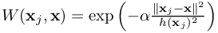
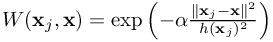
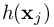

Simulate with complex geometries and complex physics
approxY()
approximation of a MESHFREE-entity by the MESHFREE least squares operators
Approximation of given discrete function values by the MESHFREE least squares approximation,
i.e. MESHFREE uses the classical least-squares approximation stencil at the current (MESHFREE point) location,
or optionally at any user-provided location  , in order to provide the following approximation:
The function approxY(), optionally, provides derivatives in the sense
where '*' stands for x, y, or z derivatives.
See DOCUMATH_DifferentialOperators.pdf for a complete description of the least-squares idea,
especially refer to chapter 1.
, in order to provide the following approximation:
The function approxY(), optionally, provides derivatives in the sense
where '*' stands for x, y, or z derivatives.
See DOCUMATH_DifferentialOperators.pdf for a complete description of the least-squares idea,
especially refer to chapter 1.
 , then MESHFREE will search for
the closest neighbor point at location
, then MESHFREE will search for
the closest neighbor point at location  in iChamber. The neighbors for the approximation task around
will be executed using the neighbor list of . Thus, the choice of the parameter NEIGHBOR_FilterMethod
will have a big impact on the results of the approximation. We remember that, using NEIGHBOR_FilterMethod > 1, we prevent the
neighbor search from "looking through" thin walls.
Experts only : Two-digit mode for iOrder :
Instead of specifying a single digit for iOrder , there is the option to specify a two digit parameter that controls which
points are considered for the approximation:
in iChamber. The neighbors for the approximation task around
will be executed using the neighbor list of . Thus, the choice of the parameter NEIGHBOR_FilterMethod
will have a big impact on the results of the approximation. We remember that, using NEIGHBOR_FilterMethod > 1, we prevent the
neighbor search from "looking through" thin walls.
Experts only : Two-digit mode for iOrder :
Instead of specifying a single digit for iOrder , there is the option to specify a two digit parameter that controls which
points are considered for the approximation:
, in order to provide the following approximation:
The function approxY(), optionally, provides derivatives in the sense
where '*' stands for x, y, or z derivatives.
See DOCUMATH_DifferentialOperators.pdf for a complete description of the least-squares idea,
especially refer to chapter 1.
[ ... approxY( %ind_u% , iChamber , OPTIONAL: iOrder ,
OPTIONAL: alphaKernel,
OPTIONAL: whatToApproximate,
OPTIONAL: xApprox, yApprox, zApprox,
OPTIONAL: factor_allowed_overshoot ) ... ]
- %ind_u% : index of the function to be approximated
- iChamber : approximation in what chamber; default : the chamber index of the current MESHFREE point Y%ind_cham%
- iOrder : order of approximation (1,2,3); default : the order given in ord_gradient
- alphaKernel : specify
 in the kernel/weight function ; default : given by DIFFOP_kernel_Gradient
in the kernel/weight function ; default : given by DIFFOP_kernel_Gradient
- whatToApproximate : 0 (function), 1 (x-derivative), 2 (y-derivative), 3 (z-derivative); default : 0
- xApprox, yApprox, zApprox : define the location where to do the approximation; default : location of current MESHFREE point (Y%ind_x(1)%, Y%ind_x(2)%, Y%ind_x(3)%)
- factor_allowed_overshoot : activate and define the factor for the allowed overshoot of the approximation: 0 (no limit for overshoot), (internally programmed values), 1" class="latex" border="0"> (user defined factor); default : 0
- DIFFOP_Version triggers the approximation method
- The smoohting length / interaction radius  is used from the appropriate SmoothingLength defintions set forth to chamber iChamber
, then MESHFREE will search for
the closest neighbor point at location in iChamber. The neighbors for the approximation task around
will be executed using the neighbor list of . Thus, the choice of the parameter NEIGHBOR_FilterMethod
will have a big impact on the results of the approximation. We remember that, using NEIGHBOR_FilterMethod > 1, we prevent the
neighbor search from "looking through" thin walls.
Experts only : Two-digit mode for iOrder :
Instead of specifying a single digit for iOrder , there is the option to specify a two digit parameter that controls which
points are considered for the approximation:
| Approximation Order 1 | Approximation Order 2 | Approximation Order 3 | |
|---|---|---|---|
| interior and free surface particles (Y%ind_kob%=%BND_none% or Y%ind_kob%=%BND_free%) | 11 | 12 | 13 |
| use only regular boundary particles (without free surface) | 21 | 22 | 23 |
| use only interior particles (Y%ind_kob%=%BND_none%) | 31 | 32 | 33 |
| use only boundary particles (including free surfaces) | 41 | 42 | 43 |